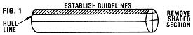

The Making Of A Cedar Dugout Canoe
Selecting the log, carving, shaping and hollowing a boat, including diagrams, photos.
By Jim McDowell
January/February 1984
Issue # 85 - January/February 1984
For centuries, the enormous western red cedars that grow along the coast in the Pacific Northwest provided the people of that region with an extraordinary-and very beautiful-form of seagoing transportation. Using only the simplest of tools, artisans carved gracefully contoured dugout canoes (some of which measured more than 60 feet long!) from single logs of this fine-grained, rot-resistant wood. The skill with which the great trees were fashioned into functional floating sculptures-boats that were used for everything from daily fishing to major voyages-became a hallmark of many tribal cultures.
Today, however, the art has all but vanished. So when my neighbor, log-house builder Earl Carter, convinced the well-known Canadian sculptor Norman Tait-a Nishga Indian-to come to our seaside village to carve an authentic Northwest Coast-style dugout, I jumped at the chance to observe and record the process.
Mr. Tait spent two weeks here in Gibsons, British Columbia transforming-with Earl's able assistance-a red cedar log into a traditional 15-foot vessel (a work of art that he later shipped to Ottawa to exhibit at the Canada Canoe Festival). As you can see from the photos, the process was dramatic . . . a gradual emergence of form from a forest giant. Perhaps with the description that follows, you'll be inspired to create a similar craft and, along with Tait and Carter, help perpetuate the skills of boat builders long since gone.
FIRST, A PLAN . . . AND A LOG
Like any major construction project, the making of a canoe requires a basic design, or blueprint. Tait-an expert wood-carver-actually whittled a miniature vessel (scaled 1 inch to the foot) based on museum photos and drawings . . . and then used the small model to help him determine the dimensions and form of the "real" canoe. Although this is probably the best way to get a feel for the undertaking, those of you who are less practiced with a knife can simply draw a design (you'll probably want to render side, top, bottom, fore, and aft views) for the same purpose. In any case, establish a plan and define the shape and dimensions of the canoe you want to build, so that you'll have a guide of some sort to follow.
With that done, you can concentrate on locating a suitable "blank": Look for a sound red cedar log that's thick enough to give you plenty of solid meat to work with after the bark and sapwood have been peeled off (Tait chose a timber that was about 18 feet long and measured approximately 40 inches at the small end and 46 inches at the base). You'll need a specimen with as few defects as possible, too . . . one or two minor checks (cracks in the wood) are acceptable, but rot and knots can pose serious problems. At least half of the log-the top or bottom when it's viewed horizontally-should be more or less free of such flaws.
Unless you're willing to pay a lumber company several hundred dollars for the wood, search along an open beach for a drift log (or hire a beachcomber to find one for you) . . . and then either work on the canoe on the spot or haul it-by boat or truck-to a convenient site. Cutting a live tree, of course, is an option open only to owners of cedar-forested land or to individuals who have permission to cut on private property.
LAYOUT
At the work site, peel off the bark and-using peaveys or a come-along-roll the tree so that its knot-free half is facing down. You'll also need to decide which end will be the stern . . . in Tait's case, it had to be the log's butt, since his design called for a relatively tall stern-end stem.
Next, locate and mark the approximate center of one end, and then draw perpendicular lines intersecting that point, as shown in Fig. I (snap a chalked plumb line from top to bottom to produce the vertical mark, and use a pencil and a level or square to establish the horizontal plane). Repeat the process at the other end.
With that accomplished, "quarter" the timber longitudinally by snapping chalk lines along the face of the log to connect the four outermost points of the bisecting lines at one end to the corresponding points at the other. You'll have to turn the log over, of course, to achieve this on the bottom side.
Now, with the log still upside down, locate what will be the canoe's lower hull line at each end and mark it parallel to its companion horizontal line. Be sure when setting this line that you come down from the base far enough to provide plenty of extra working width on both sides of the hull, but not so far that you won't have enough wood to accommodate the height of the craft's sides. (Tait, for example, positioned his line 6 inches from the log's bottom.) Then snap off a line along each side of the log to connect the outer points of the hull mark at one end to those at the other (again, see Fig. 1).
BLOCKING OUT
At this point you can start blocking out the general shape of the canoe, using the chalked guidelines to help you maintain your intended design.
While the log is upside down, flatten the bottom by using wedges and a sledge to cleave off wood (the shaded section in Fig. 1) until you reach the marked hull lines. (This shouldn't be hard: Cedar is an exceptionally straight-splitting wood.) Then turn the log right side up and-with a carpenter's or grease pencil-sketch in the sheer (deck line), including upturned stems if your design calls for them (as did Tait's), on both sides of the log. To establish the sheer, measure and mark a uniform distance up from the hull line (Twit came up 13 inches) at several points along each side.
Now, you can proceed to remove the large section of log above the sheer . . . a chain saw, although obviously not a traditional tool, makes short work of the job. Using Fig. 2 as a guide to the placement and order of the vertical cuts you make, saw down to within 3 inches of the actual deck line at the four points indicated. Then-with a sledge and wedges-pry out the small chunk between cuts 2 and 4 (the shaded area in Fig. 2), angling the wedges upward, of course, to avoid cutting into material that you may need. Finally, chip out the two large chunks between cuts 1 and 4-again using wedges-and chop off any remaining high spots with a double-bladed ax.
Leaving the two pie-shaped pieces at the ends (A and Bin Fig. 2) in place for now, stand on top of the log and sketch the angledin bow and stern sides on the surface, as shown in Fig. 3. Then-starting about an inch outside your lines (to make sure you'll have plenty of wood to work with)-cut those four corner pieces oft- with your chain saw. With that done, you can go back and remove the two pie-shaped pieces mentioned above, again allowing at least an extra inch outside your mark just to be safe. (Actually, when Tait and Carter were blocking out their canoe, they cut the four corners off before removing any wood above the sheer . . . but in retrospect, it seemed clear that chopping out the excess material above the sheer first would've made determining the correct bow and stern angles easier.)
Next, sketch in the lower line of each stem on one side of the log (see Fig. 4) and since you want the stems to be as symmetrical as possible-make cardboard templates of the delineated areas and use them to transfer the lines to the opposite sides. Once you chain-saw the triangular sections off, your canoe will be completely blocked out.
ROUGH SHAPING
Now, you're ready to begin giving the vessel its basic contours. For this job, Earl and Norman used a double-bladed ax, a store-bought broad adz, and a homemade elbow adz (see the accompanying sidebar). If you lack experience with these instruments, take some time to practice using them on the chunks of wood you've already removed. Get a feel for the tools and for the way cedar in particular responds to them.
You can start shaping the canoe by hollowing out some of the hull's interior with your ax and/or chain saw. Don't cut very deep, though . . . the idea at this point is simply to remove enough excess wood to reduce the canoe's weight somewhat (which makes maneuvering the log a bit easier) and to allow the interior to begin drying uniformly (which helps to keep checks from developing).
Roll the log over so that one side is facing upward: The task at hand is to concentrate on shaping that one side only. Using your ax, broad adz, and elbow adz, work the wood a little at a time so that the desired contours gradually emerge from the cedar. The key here is to proceed very slowly, and-especially when you get close to achieving the shape you want-to make shallow cuts, perpendicular to the grain, so that you won't cut too deeply. This entire process, of course, is highly subjective . . . your only real guides are your own artistic instincts (and your scale model, if you made one). So work carefully-roughing out not only the curvature of the side, but also the stem ends-until you and your sense of design are satisfied with the end product.
At this point, you can begin to transfer the basic form you've created to the canoe's other side. Roll the log upside down onto blocks that are high enough to support the deck and keep the stems off the ground. Then strike a series of parallel lines-spaced about 8 to 10 inches apart-across the flat underside and perpendicular to the keel line (the exact longitudinal center of the canoe).
Now, make a simple measuring device by tying a nail to one end of a short length (about 14 inches) of string. Then hold the nail on any one of the parallel lines, at the point where that mark touches the side edge (where the bottom stops and the side begins) on the shaped half of the hull. Stretch the string along the line until it reaches the keel mark . . . hold the cord down at that point . . . swing the nail around to the other side . . . and-with the string pulled taut-an arc with the spike across the sketched line. By repeating this scribing process on all of the parallel lines, and then drawing a longitudinal line connecting these marked points of intersection-where each arc crosses its corresponding line-you'll establish the second side edge. On Tan's canoe, the distance between the two from beam to beam (in other words, the width of the base at its widest point) worked out to be 16 inches.
Tilt the canoe so that the unshaped side is facing skyward, and start contouring its surface . . . since you have an example to follow this time, you should be able to accomplish this fairly quickly. When you achieve what seems to be a rough mirror image of the opposite side, roll the vessel upside down again, eyeball your work to compare the slope of one "wall" to that of the other, and hew off any wood that is necessary to make the canoe's contours symmetrical.
Next, to make sure the vessel's curvature is uniform, first use your nail-and-string measure-and the parallel line/arc technique described earlier-to strike longitudinal lines on the hull that are 1, 6, and 12 inches from the keel. Any bulges in these lines will indicate where wood must be removed.
Then, to check the full slope of the sides, lay a leveled board across the middle of the canoe's bottom (as shown in Fig. 5) and drop a plumb line from the plank at a measured distance from the keel. Mark the point where the plumb bob touches the hull . . . and then repeat the process on the other side, using the same keel-to-string span and the same amount of plumb cord. The spots marked on both sides should be equidistant . . . if they're not, remove some wood from the side that is protruding and check the slope again. Once the measurements are equal, move the string farther out on the board, and lengthen the plumb line so that the bob touches the hull just an inch or so below the sheer. Compare (and, if necessary, correct) the contour of each side at that point, too.
When you've finished rounding off this entire middle section to the curvature you want, make a template of the contour to use as a guide for the rest of the canoe: Rive out an inch-thick cedar board about 2 feet long and 6 inches wide, and-with your adz-carve a concave curve into it that matches that of the hull from one side edge to the sheer. Then sculpt the rest of the canoe's body to mimic this pattern. For a really precise "fit", you can coat the curve of the template with a graphite lumber crayon dipped in water, and then run the board on the part of the hull you're working. The graphite will rub off on any high spots, which then can be chipped away.
HOLLOWING THE HULL
After you've rough-shaped the exterior, roll the canoe right side up and resume hollowing out the inside. Remove large chunks with your ax and chain saw, and then use the round-bladed cooper's adz to form the curved interior walls.
When you've worked the sides down to a thickness of about 3 or 4 inches, you'll be ready to establish depth guides. Turn the boat upside down and-starting at the exact center of the bottom (see Fig. 6)-drill 1/4"-diameter holes, 2 inches deep and one hand (about 4 inches) apart, into the wood all along the keel. Then bore another row of holes (using the same depth and spacing) on each side of the drilled line, one hand away from-and parallel to-the keel.
Now, still utilizing the one-hand measure, continue boring rows of holes up the sides of the canoe (see Fig. 7) . . . but decrease the depth of the cavities in the third line out from the keel on each side to 1-1/2 inches, and in subsequent rows to only 1 inch.
Once all the depth guides have been established, turn the vessel right side up again and use your adzes to hollow out the interior until you work down far enough to expose all of the holes . . . the result will be an almost finished hull that tapers gradually from a 2-inch thickness on the bottom to 1-1/2 inches at the bilge line and 1 inch up the side.
Of course, this process also produces a very leaky boat! I have to confess that when Tait and Carter started sinking a drill into the exterior of their beautiful, masterfully shaped canoe-and then chopped the inside away until (gasp) the cavities ran all the way through-I could barely contain my shock. But they assured me that the technique is a traditional way to create a hull with a uniformly graduated thickness, and that they'd eventually plug the openings permanently to restore the canoe's seaworthiness.
FINAL SHAPING
You don't want to fill the depth guides just yet, however, because you'll need them to help you gauge your final finishing work. Using the D-adz and curved knife-and proceeding very carefully, never taking a substantial amount of wood from any one spot at a time-shave and shape the hull to a thickness of about 1-1/2 inches on the bottom, 1 inch at the bilge, and 3/4 inch along the sides. This process requires hours of delicate carving, on both the interior and exterior, and demands a high degree of patient artistry: If you work too quickly, you'll remove more wood than you want from a given area and lose the contours and/or thickness for which you're striving.
Once you've achieved the desired shape and thickness (congratulations . . . you're nearly done!), you can proceed to fill the depth-guide holes, one at a time. First, stuff a bundle of tender spruce buds into an opening, and then drive a short, sharpened 1/4"-diameter cedar peg into one side of the cavity, and then another peg into the opposite side, so that the two whittled tips intermesh tightly. The wooden pins crush the spruce needles . . . which in turn release a sticky resin that glues the wedges together to form a permanent, watertight plug. Now, go ahead and trim off all of the wood that protrudes from the opening, so that the filled area is flush with the hull . . . and go on to stop up the remaining cavities in the same manner.
There . . . you're finished! Stand back and admire your work (and try to resist the temptation to chip off "just a little more" here and there). The adz blades produce an attractive feathered pattern that's usually left intact, at least on the inside. Possible alternatives include sanding the wood smooth and carving decorations into the cedar. Both operations, though, require a thicker-and thus heavier-hull. Norman and Earl chose to adorn their sculpture only with a narrow trim line carved just below the sheer . . . and I think you'll agree, from looking at the photos of the end product,that any further embellishment was truly unnecessary!
A VALUABLE LEARNING EXPERIENCE
Obviously, carving a traditional Indian dugout canoe from a massive chunk of unyielding wood is no small job: It requires time, patience, persistence, strength, and skill. But as in so many other seemingly formidable tasks, the key to success is more in the doing than in knowing how. You learn as you go.
And remember that everybody-even an expert woodcrafter like Tait or Carter-is likely to make mistakes and encounter unforeseen problems. The stem ends on Norman's and Earl's canoe, for example, developed serious checks . . . cracks that had to be pegged together in an effort (time will tell how successful) to keep the extensions from breaking off completely. But even if the worst should happen, Tait will probably just resculpt what remains of the bow and stern, or perhaps carve and attach new stem ends. "Don't be afraid to make mistakes," says Norman. "Most of them can be corrected . . . and all of them will teach you something."
Perhaps a story will best illustrate this point. Charles Jones, a Nootka chief who was an expert canoe-maker (and who claimed that you had to have worked on at least three canoes to master the art), liked to tell about how he learned to create dugouts. One day when Charles was nine years old, his father took him into the woods, bucked a cedar log, and told the boy to try to carve a canoe the way he had seen his elders do it. The old man then sat down to watch, saying, "The uglier it is, the better for you."
Charles's dad knew that the youngster would learn best by making his own mistakes. Come to think of it, that's a good lesson to remember when you're about to tackle any challenge!
BASIC CANOE-CARVING TOOLS
Except for some occasional help from a chain saw, Norman and Earl sculpted their entire canoe with the following six hand tools (from left to right in the photo):
Broad adz . Used mainly for rough-shaping, this tool bites deep-especially at the corners-so swing it with restraint.
Curved knife . The boat builders made this finishing implement, which is ideal for delicate work, from a four-inch curved blade purchased from a sculpture supply house and a 12-inch piece of yellow cedar.
Double-bladed ax . A heavy, long-bladed feller's ax like this one is necessary to provide ample reach and tuning force for chopping out the hull's interior. The blade's corners should be rounded off with a file so they won't catch in the wood.
D-adz. Named for the shape of its handle, this is the perfect canoe-carving tool . . . Tait used it for most of the final shaping. Norman made the D-adz you see here, using a six-inch length of a half-rounded steel file-ground on one end of the curved side to a 15° cutting edge-for the blade and a piece of alder for the grip.
Elbow adz. Norman made the blade of this elbow adz-a tool that proved ideal for rough-shaping the sides and stems-by cutting an old automobile leaf spring to a 6-1/2-inch length and grinding one end to form a single-sided cutting edge with a 15° bevel. For the 22-inch handle, he chopped off an alder branch, including an 8-inch portion of the tree's trunk (the limb extended out at about a 45° angle). Then he whittled a flat ledge into about half of the trunk stub, leaving a back notch to keep the blade from sliding. After laying a leather pad between the wood and metal to provide a tighter bond, he wrapped the two parts together with halibut line.
Cooper's adz. The scoop-shaped blade of this implement-which is traditionally used for making barrel staves-is useful for cutting across the grain and roughing out the curved bilge line inside the hull.
Although red cedar is a relatively soft wood, it can dull a cutting edge on any of these tools very quickly. Tait and Carter found that their work was much easier when they took just a few minutes from time to time to restore their blades to razor-sharpness with a whetstone.
[1] Carter, Tait, and a friend flatten the canoe's bottom. [2] Carter chops away the first chunk from the
log's "top" and . . . [3] pries out a large section. [4] With the waste wood removed, Earl uses an ax to
shape the prom and [5] hollow out some of the interior. [6] While Tait sculpts the sheer line with a curved
knife, Carter rough-shapes the hull. [7] A broad adz is ideal for contouring large areas. [8] By working
carefully and slowly, the two craftsmen gradually coax the canoe's graceful shape from the cedar.
[1] Skillful hands guide the curved knife. [2] Carter finishes the rough-shaping, using a homemade elbow adz. [3] Tait resumes
hollowing out the hull. [4] Earl drills depth-guide holes and . . . [5] the two men excavate the interior down to the cavities. [6] Tait
and Carter plan the final shaping, which [7] is done almost entirely with Norman's self-crafted D-adz. [8] Sharp tools are a must! [9]
Tait shapes a stem with the elbow adz. [10] Norman and Earl load the finished 150-pound canoe in a van, for shipping to Ottawa.
|
 [1] Carter, Tait, and a friend flatten the canoe's bottom. [2] Carter chops away the first chunk from the log's ""top"" and . . . [3] pries out a large section. [4] With the waste wood removed, Earl uses an ax to shape the prom and [5] hollow out some of the interior. [6] While Tait sculpts the sheer line with a curved knife, Carter rough-shapes the hull. [7] A broad adz is ideal for contouring large areas. [8] By working carefully and slowly, the two craftsmen gradually coax the canoe's graceful shape from the cedar. |
 [1] Skillful hands guide the curved knife. [2] Carter finishes the rough-shaping, using a homemade elbow adz. [3] Tait resumes hollowing out the hull. [4] Earl drills depth-guide holes and . . . [5] the two men excavate the interior down to the cavities. [6] Tait and Carter plan the final shaping, which [7] is done almost entirely with Norman's self-crafted D-adz. [8] Sharp tools are a must! [9] Tait shapes a stem with the elbow adz. [10] Norman and Earl load the finished 150-pound canoe in a van, for shipping to Ottawa. |
|
|
|
|
|
 |
|
|